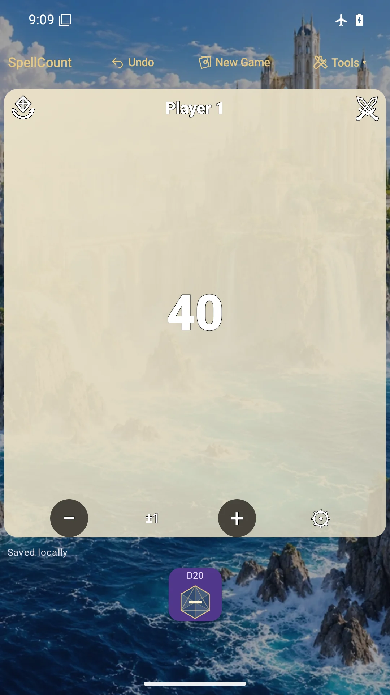
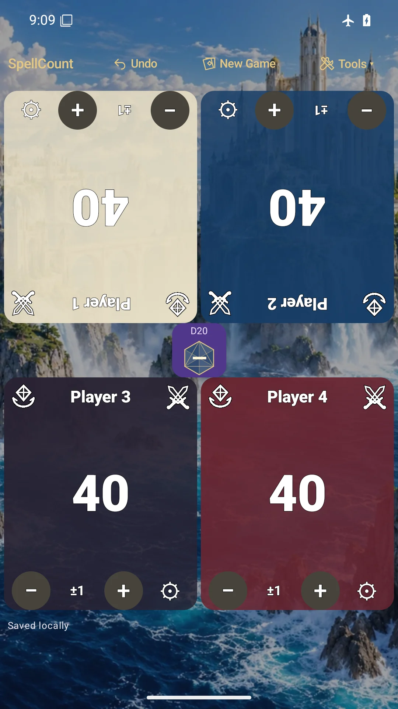
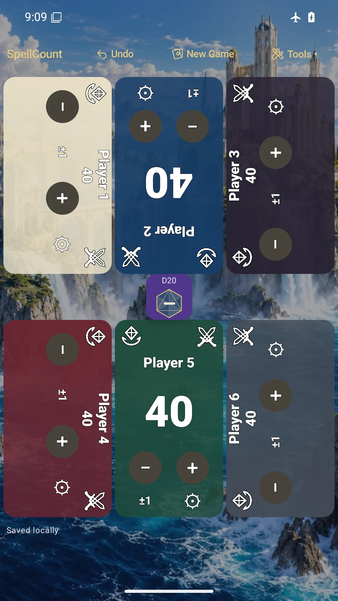

One to six players
Large life totals, flexible tile rotations and a shared D20, D6, D4 and coin roller. Solo dice sit below the player tile.
Tools for the table
Keep the numbers close and the game moving. A tabletop companion from Cardboard Squire, built around the way you play.
Preparing for Google Play. Not publicly released yet.

SpellCount 1.0
From solo tracking to a six-player table, keep life, mana, tokens and reminders in one place. Personalize your tiles without moving the essentials out of reach.
Large life totals, flexible tile rotations and a shared D20, D6, D4 and coin roller. Solo dice sit below the player tile.
Track commander damage, poison, radiation, mana and tokens. Use the optional Turn Assistant and trigger reminders when you need them.
Choose themes, fonts, borders and static backgrounds, or import a local image or supported GIF as a player playmat.
Local saves and global Undo help you keep track. Core tracking works offline, with no online game account required.
Room for the whole table
Actual RC5 screens with sample player profiles. Tile rotation lets players read their own seat.


Clear choices
Match records and imported playmats use private local storage. SpellCount contains advertising, and Google's advertising and consent services may process data. Read the policy for the full details.
Find troubleshooting steps, privacy information and a direct way to contact Cardboard Squire.
Visit SpellCount support →